%config InlineBackend.figure_formats = ['svg']
import numpy as np
import matplotlib.pyplot as plt
import math
import sklearn
import sklearn.datasets
plt.rcParams['figure.figsize'] = (7.0, 4.0) # default size of plotsLab: Optimization Methods
deep-learning
lab
optimization
mini-batch
momentum
adam
learning-rate
Implement mini-batch creation, momentum, and Adam by hand, then train a 3-layer network on the moons dataset with learning rate decay schedules.
This lab is the fourth programming assignment of the course, and it puts the mini-batch gradient descent and momentum, RMSprop, and Adam pages into practice. Until now, you have always used gradient descent to update the parameters and minimize the cost. In this lab, you will gain skills with some more advanced optimization methods that can speed up learning and perhaps even get you to a better final value for the cost function. Having a good optimization algorithm can be the difference between waiting days versus just a few hours to get a good result.
By the end of this lab, you will be able to apply optimization methods such as (stochastic) gradient descent, momentum, and Adam, use random mini-batches to accelerate convergence, and use learning rate decay scheduling to speed up training.
Gradient descent goes downhill on a cost function \(J\). Think of it as trying to do this.

As usual, \(\frac{\partial J}{\partial a} =\) da for any variable a.
Packages and Helpers
Besides NumPy and matplotlib, this lab uses math for the floor function when counting mini-batches and scikit-learn to generate the dataset.
The course provides a helper file, opt_utils_v1a.py, with the pieces that are not the point of this lab, including the He parameter initialization from the Initialization lab, the forward and backward propagation for the fixed 3-layer architecture, the cost, prediction, the dataset loader, and a decision boundary plotter. They are reproduced in the collapsed callout below with the same compatibility fixes as in the previous labs (dtype=int instead of the removed np.int, and .ravel() on scatter colors). One detail worth noticing is that compute_cost returns the total (unaveraged) cost of its batch. Because the cost will now be computed mini-batch by mini-batch, the training loop first accumulates the totals over an entire epoch and only then divides by the \(m\) training examples.
NoteHelper Functions from opt_utils_v1a.py
def sigmoid(x):
"""Compute the sigmoid of x."""
s = 1 / (1 + np.exp(-x))
return s
def relu(x):
"""Compute the relu of x."""
s = np.maximum(0, x)
return s
def initialize_parameters(layer_dims):
"""He initialization, scaled by sqrt(2 / previous layer size)."""
np.random.seed(3)
parameters = {}
L = len(layer_dims) # number of layers in the network
for l in range(1, L):
parameters['W' + str(l)] = np.random.randn(layer_dims[l], layer_dims[l - 1]) * np.sqrt(2 / layer_dims[l - 1])
parameters['b' + str(l)] = np.zeros((layer_dims[l], 1))
return parameters
def compute_cost(a3, Y):
"""
Total (unaveraged) cross-entropy cost of the batch.
This is used with mini-batches, so costs are first accumulated
over an entire epoch and then divided by the m training examples.
"""
logprobs = np.multiply(-np.log(a3), Y) + np.multiply(-np.log(1 - a3), 1 - Y)
cost_total = np.sum(logprobs)
return cost_total
def forward_propagation(X, parameters):
"""LINEAR -> RELU -> LINEAR -> RELU -> LINEAR -> SIGMOID."""
W1 = parameters["W1"]
b1 = parameters["b1"]
W2 = parameters["W2"]
b2 = parameters["b2"]
W3 = parameters["W3"]
b3 = parameters["b3"]
z1 = np.dot(W1, X) + b1
a1 = relu(z1)
z2 = np.dot(W2, a1) + b2
a2 = relu(z2)
z3 = np.dot(W3, a2) + b3
a3 = sigmoid(z3)
cache = (z1, a1, W1, b1, z2, a2, W2, b2, z3, a3, W3, b3)
return a3, cache
def backward_propagation(X, Y, cache):
"""Backward propagation for the 3-layer network."""
m = X.shape[1]
(z1, a1, W1, b1, z2, a2, W2, b2, z3, a3, W3, b3) = cache
dz3 = 1. / m * (a3 - Y)
dW3 = np.dot(dz3, a2.T)
db3 = np.sum(dz3, axis=1, keepdims=True)
da2 = np.dot(W3.T, dz3)
dz2 = np.multiply(da2, np.int64(a2 > 0))
dW2 = np.dot(dz2, a1.T)
db2 = np.sum(dz2, axis=1, keepdims=True)
da1 = np.dot(W2.T, dz2)
dz1 = np.multiply(da1, np.int64(a1 > 0))
dW1 = np.dot(dz1, X.T)
db1 = np.sum(dz1, axis=1, keepdims=True)
gradients = {"dz3": dz3, "dW3": dW3, "db3": db3,
"da2": da2, "dz2": dz2, "dW2": dW2, "db2": db2,
"da1": da1, "dz1": dz1, "dW1": dW1, "db1": db1}
return gradients
def predict(X, y, parameters):
"""Predict 0/1 labels and print the accuracy."""
m = X.shape[1]
p = np.zeros((1, m), dtype=int)
a3, caches = forward_propagation(X, parameters)
for i in range(0, a3.shape[1]):
if a3[0, i] > 0.5:
p[0, i] = 1
else:
p[0, i] = 0
print("Accuracy: " + str(np.mean((p[0, :] == y[0, :]))))
return p
def plot_decision_boundary(model, X, y):
"""Fill the plane with the model's predictions and overlay the data."""
x_min, x_max = X[0, :].min() - 1, X[0, :].max() + 1
y_min, y_max = X[1, :].min() - 1, X[1, :].max() + 1
h = 0.01
xx, yy = np.meshgrid(np.arange(x_min, x_max, h), np.arange(y_min, y_max, h))
Z = model(np.c_[xx.ravel(), yy.ravel()])
Z = Z.reshape(xx.shape)
plt.contourf(xx, yy, Z, cmap=plt.cm.Spectral)
plt.ylabel('x2')
plt.xlabel('x1')
plt.scatter(X[0, :], X[1, :], c=y.ravel(), cmap=plt.cm.Spectral)
plt.show()
def predict_dec(parameters, X):
"""Predictions used for plotting the decision boundary (threshold 0.5)."""
a3, cache = forward_propagation(X, parameters)
predictions = (a3 > 0.5)
return predictions
def load_dataset():
"""Generate and plot the moons dataset."""
np.random.seed(3)
train_X, train_Y = sklearn.datasets.make_moons(n_samples=300, noise=.2)
plt.scatter(train_X[:, 0], train_X[:, 1], c=train_Y.ravel(), s=40, cmap=plt.cm.Spectral)
train_X = train_X.T
train_Y = train_Y.reshape((1, train_Y.shape[0]))
return train_X, train_YThe exercise test cases from testCases.py are in this second callout. Each one builds small seeded inputs so the printed outputs of your functions can be compared against the course’s expected values.
NoteTest Cases from testCases.py
def update_parameters_with_gd_test_case():
np.random.seed(1)
learning_rate = 0.01
W1 = np.random.randn(2, 3)
b1 = np.random.randn(2, 1)
W2 = np.random.randn(3, 2)
b2 = np.random.randn(3, 1)
dW1 = np.random.randn(2, 3)
db1 = np.random.randn(2, 1)
dW2 = np.random.randn(3, 2)
db2 = np.random.randn(3, 1)
parameters = {"W1": W1, "b1": b1, "W2": W2, "b2": b2}
grads = {"dW1": dW1, "db1": db1, "dW2": dW2, "db2": db2}
return parameters, grads, learning_rate
def random_mini_batches_test_case():
np.random.seed(1)
mini_batch_size = 64
X = np.random.randn(12288, 148)
Y = np.random.randn(1, 148) < 0.5
return X, Y, mini_batch_size
def initialize_velocity_test_case():
np.random.seed(1)
W1 = np.random.randn(3, 2)
b1 = np.random.randn(3, 1)
W2 = np.random.randn(3, 3)
b2 = np.random.randn(3, 1)
parameters = {"W1": W1, "b1": b1, "W2": W2, "b2": b2}
return parameters
def update_parameters_with_momentum_test_case():
np.random.seed(1)
W1 = np.random.randn(2, 3)
b1 = np.random.randn(2, 1)
W2 = np.random.randn(3, 2)
b2 = np.random.randn(3, 1)
dW1 = np.random.randn(2, 3)
db1 = np.random.randn(2, 1)
dW2 = np.random.randn(3, 2)
db2 = np.random.randn(3, 1)
parameters = {"W1": W1, "b1": b1, "W2": W2, "b2": b2}
grads = {"dW1": dW1, "db1": db1, "dW2": dW2, "db2": db2}
v = {'dW1': np.zeros((2, 3)), 'dW2': np.zeros((3, 2)),
'db1': np.zeros((2, 1)), 'db2': np.zeros((3, 1))}
return parameters, grads, v
def initialize_adam_test_case():
np.random.seed(1)
W1 = np.random.randn(2, 3)
b1 = np.random.randn(2, 1)
W2 = np.random.randn(3, 2)
b2 = np.random.randn(3, 1)
parameters = {"W1": W1, "b1": b1, "W2": W2, "b2": b2}
return parameters
def update_parameters_with_adam_test_case():
np.random.seed(1)
v = {'dW1': np.zeros((2, 3)), 'dW2': np.zeros((3, 2)),
'db1': np.zeros((2, 1)), 'db2': np.zeros((3, 1))}
s = {'dW1': np.zeros((2, 3)), 'dW2': np.zeros((3, 2)),
'db1': np.zeros((2, 1)), 'db2': np.zeros((3, 1))}
W1 = np.random.randn(2, 3)
b1 = np.random.randn(2, 1)
W2 = np.random.randn(3, 2)
b2 = np.random.randn(3, 1)
dW1 = np.random.randn(2, 3)
db1 = np.random.randn(2, 1)
dW2 = np.random.randn(3, 2)
db2 = np.random.randn(3, 1)
parameters = {"W1": W1, "b1": b1, "W2": W2, "b2": b2}
grads = {"dW1": dW1, "db1": db1, "dW2": dW2, "db2": db2}
t = 2
learning_rate = 0.02
beta1 = 0.8
beta2 = 0.888
epsilon = 1e-2
return parameters, grads, v, s, t, learning_rate, beta1, beta2, epsilon
NoteLab Files Download
Everything this lab needs, ready to download.
- opt_utils_v1a.py (8 KB), the helper functions with the compatibility fixes already applied
- testCases.py (4 KB), the seeded exercise test cases
There is no dataset to download, since load_dataset() generates the moons data in code with scikit-learn.
Gradient Descent
A simple optimization method in machine learning is gradient descent. When you take gradient steps with respect to all \(m\) examples on each step, it is also called batch gradient descent.
The first exercise is the gradient descent update rule itself. For \(l = 1, \ldots, L\),
\[ W^{[l]} = W^{[l]} - \alpha\, dW^{[l]} \tag{1} \]
\[ b^{[l]} = b^{[l]} - \alpha\, db^{[l]} \tag{2} \]
where \(L\) is the number of layers and \(\alpha\) is the learning rate. All parameters are stored in the parameters dictionary. Note that the iterator l starts at 1 in the for loop, because the first parameters are \(W^{[1]}\) and \(b^{[1]}\).
def update_parameters_with_gd(parameters, grads, learning_rate):
"""
Update parameters using one step of gradient descent.
Arguments:
parameters -- python dictionary with parameters W1, b1, ..., WL, bL
grads -- python dictionary with gradients dW1, db1, ..., dWL, dbL
learning_rate -- the learning rate, scalar
Returns:
parameters -- python dictionary containing the updated parameters
"""
L = len(parameters) // 2 # number of layers in the neural network
for l in range(1, L + 1):
parameters["W" + str(l)] = parameters["W" + str(l)] - learning_rate * grads["dW" + str(l)]
parameters["b" + str(l)] = parameters["b" + str(l)] - learning_rate * grads["db" + str(l)]
return parametersRun the seeded test case to check the update against the course’s expected values.
parameters, grads, learning_rate = update_parameters_with_gd_test_case()
learning_rate = 0.01
parameters = update_parameters_with_gd(parameters, grads, learning_rate)
print("W1 =\n" + str(parameters["W1"]))
print("b1 =\n" + str(parameters["b1"]))
print("W2 =\n" + str(parameters["W2"]))
print("b2 =\n" + str(parameters["b2"]))W1 =
[[ 1.63312395 -0.61217855 -0.5339999 ]
[-1.06196243 0.85396039 -2.3105546 ]]
b1 =
[[ 1.73978682]
[-0.77021546]]
W2 =
[[ 0.32587637 -0.24814147]
[ 1.47146563 -2.05746183]
[-0.32772076 -0.37713775]]
b2 =
[[ 1.13773698]
[-1.09301954]
[-0.16397615]]Stochastic Gradient Descent
A variant of this is stochastic gradient descent (SGD), which is equivalent to mini-batch gradient descent where each mini-batch has just one example. The update rule you just implemented does not change. What changes is that you would be computing gradients on just one training example at a time, rather than on the whole training set. The code sketches below illustrate the difference between batch gradient descent and stochastic gradient descent.
Batch gradient descent
X = data_input
Y = labels
m = X.shape[1] # number of training examples
parameters = initialize_parameters(layers_dims)
for i in range(0, num_iterations):
# Forward propagation
a, caches = forward_propagation(X, parameters)
# Compute cost
cost_total = compute_cost(a, Y) # cost for m training examples
# Backward propagation
grads = backward_propagation(a, caches, parameters)
# Update parameters
parameters = update_parameters(parameters, grads)
# Compute average cost
cost_avg = cost_total / mStochastic gradient descent
X = data_input
Y = labels
m = X.shape[1] # number of training examples
parameters = initialize_parameters(layers_dims)
for i in range(0, num_iterations):
cost_total = 0
for j in range(0, m):
# Forward propagation
a, caches = forward_propagation(X[:, j], parameters)
# Compute cost
cost_total += compute_cost(a, Y[:, j]) # cost for one training example
# Backward propagation
grads = backward_propagation(a, caches, parameters)
# Update parameters
parameters = update_parameters(parameters, grads)
# Compute average cost
cost_avg = cost_total / mIn stochastic gradient descent, you use only one training example before updating the gradients. When the training set is large, SGD can be faster. But the parameters will oscillate toward the minimum rather than converge smoothly. Here is what that looks like on a toy cost surface, where the red plus sign denotes the minimum of the cost.
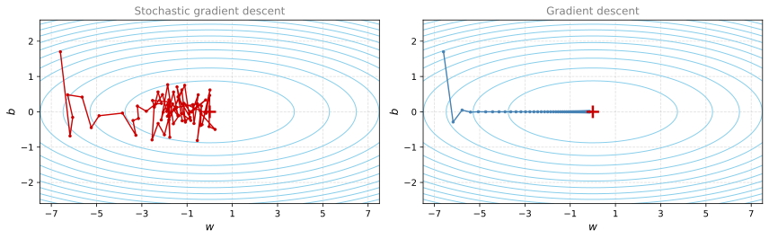
SGD leads to many oscillations before reaching convergence, but each step is a lot faster to compute, as it uses only one training example instead of the whole batch. Note also that implementing SGD requires three for-loops in total, over the number of iterations, over the \(m\) training examples, and over the layers (to update all parameters from \((W^{[1]}, b^{[1]})\) to \((W^{[L]}, b^{[L]})\)).
In practice, you will often get faster results if you do not use the entire training set, or just one training example, to perform each update. Mini-batch gradient descent uses an intermediate number of examples for each step, so the update direction has less variance than SGD while each step remains much cheaper than a full batch pass. Using mini-batches in your optimization algorithm often leads to faster optimization.
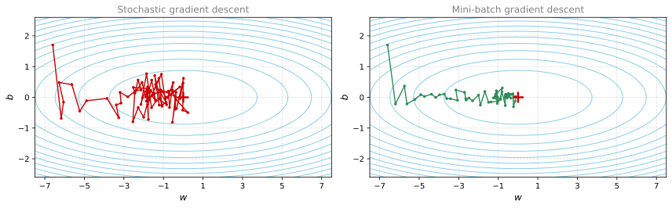
Mini-Batch Gradient Descent
Now you will build mini-batches from the training set \((X, Y)\), exactly the shuffle-then-partition procedure described on the mini-batch gradient descent page. There are two steps.
Shuffle. Create a shuffled version of the training set \((X, Y)\) as shown below. Each column of \(X\) and \(Y\) represents a training example. Note that the random shuffling is done synchronously between \(X\) and \(Y\), so that after the shuffling the \(i\)-th column of \(X\) is still the example corresponding to the \(i\)-th label in \(Y\). The shuffling step ensures that examples are split randomly into different mini-batches.

Partition. Partition the shuffled \((X, Y)\) into mini-batches of size mini_batch_size (here 64). The number of training examples is not always divisible by mini_batch_size, so the last mini-batch might be smaller. With \(\lfloor s \rfloor\) denoting \(s\) rounded down to the nearest integer (math.floor(s) in Python), there will be \(\left\lfloor \frac{m}{\text{mini\_batch\_size}} \right\rfloor\) mini-batches with a full 64 examples, and the final mini-batch holds the remaining \(m - \text{mini\_batch\_size} \times \left\lfloor \frac{m}{\text{mini\_batch\_size}} \right\rfloor\) examples.
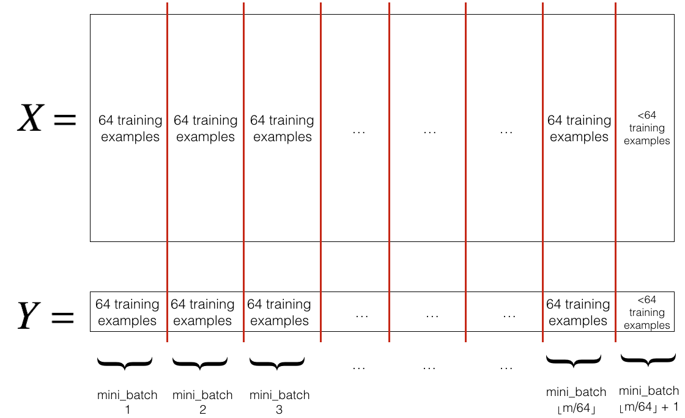
The shuffling part is already coded. The partition step slices the shuffled matrices column-wise, using the loop variable k to move the slice forward in multiples of mini_batch_size, so mini-batch \(k\) covers columns k * mini_batch_size up to (k + 1) * mini_batch_size.
def random_mini_batches(X, Y, mini_batch_size=64, seed=0):
"""
Creates a list of random minibatches from (X, Y).
Arguments:
X -- input data, of shape (input size, number of examples)
Y -- true "label" vector (1 for blue dot / 0 for red dot), of shape (1, number of examples)
mini_batch_size -- size of the mini-batches, integer
Returns:
mini_batches -- list of synchronous (mini_batch_X, mini_batch_Y)
"""
np.random.seed(seed) # to make the "random" minibatches reproducible
m = X.shape[1] # number of training examples
mini_batches = []
# Step 1: Shuffle (X, Y)
permutation = list(np.random.permutation(m))
shuffled_X = X[:, permutation]
shuffled_Y = Y[:, permutation].reshape((1, m))
# Step 2: Partition (shuffled_X, shuffled_Y), minus the end case
num_complete_minibatches = math.floor(m / mini_batch_size)
for k in range(0, num_complete_minibatches):
mini_batch_X = shuffled_X[:, k * mini_batch_size : (k + 1) * mini_batch_size]
mini_batch_Y = shuffled_Y[:, k * mini_batch_size : (k + 1) * mini_batch_size]
mini_batch = (mini_batch_X, mini_batch_Y)
mini_batches.append(mini_batch)
# Handle the end case (last mini-batch < mini_batch_size)
if m % mini_batch_size != 0:
mini_batch_X = shuffled_X[:, num_complete_minibatches * mini_batch_size : m]
mini_batch_Y = shuffled_Y[:, num_complete_minibatches * mini_batch_size : m]
mini_batch = (mini_batch_X, mini_batch_Y)
mini_batches.append(mini_batch)
return mini_batchesThe test case builds a fake training set with \(m = 148\) examples and mini-batches of 64, so the function should return two full mini-batches of 64 and one final mini-batch with the remaining 20 examples.
t_X, t_Y, mini_batch_size = random_mini_batches_test_case()
mini_batches = random_mini_batches(t_X, t_Y, mini_batch_size)
print("shape of the 1st mini_batch_X: " + str(mini_batches[0][0].shape))
print("shape of the 2nd mini_batch_X: " + str(mini_batches[1][0].shape))
print("shape of the 3rd mini_batch_X: " + str(mini_batches[2][0].shape))
print("shape of the 1st mini_batch_Y: " + str(mini_batches[0][1].shape))
print("shape of the 2nd mini_batch_Y: " + str(mini_batches[1][1].shape))
print("shape of the 3rd mini_batch_Y: " + str(mini_batches[2][1].shape))
print("mini batch sanity check: " + str(mini_batches[0][0][0][0:3]))shape of the 1st mini_batch_X: (12288, 64)
shape of the 2nd mini_batch_X: (12288, 64)
shape of the 3rd mini_batch_X: (12288, 20)
shape of the 1st mini_batch_Y: (1, 64)
shape of the 2nd mini_batch_Y: (1, 64)
shape of the 3rd mini_batch_Y: (1, 20)
mini batch sanity check: [ 0.90085595 -0.7612069 0.2344157 ]
ImportantWhat to Remember
- Shuffling and partitioning are the two steps required to build mini-batches.
- Powers of two are often chosen as the mini-batch size, for example 16, 32, 64, 128.
Momentum
Because mini-batch gradient descent makes a parameter update after seeing just a subset of examples, the direction of the update has some variance, so the path taken by mini-batch gradient descent oscillates toward convergence. Using momentum can reduce these oscillations.
Momentum takes the past gradients into account to smooth out the update. The direction of the previous gradients is stored in the variable \(v\). Formally, this is the exponentially weighted average of the gradients on previous steps, built with the tool from the exponentially weighted averages page. You can also think of \(v\) as the velocity of a ball rolling downhill, building up speed (and momentum) according to the direction of the gradient of the hill.
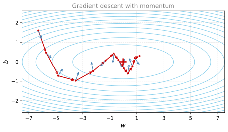
The red arrows show the steps taken by mini-batch gradient descent with momentum, and the blue arrows show the downhill direction of the gradient computed on the current mini-batch at each step. Rather than just following the gradient, each gradient is allowed to influence the velocity \(v\), and the step is taken in the direction of \(v\).
The velocity \(v\) is a Python dictionary initialized with arrays of zeros. Its keys are the same as those in the grads dictionary, so v["dW1"] has the same shape as parameters["W1"], and so on for every layer.
def initialize_velocity(parameters):
"""
Initializes the velocity as a python dictionary with:
- keys: "dW1", "db1", ..., "dWL", "dbL"
- values: numpy arrays of zeros, same shape as the corresponding parameters.
Arguments:
parameters -- python dictionary with parameters W1, b1, ..., WL, bL
Returns:
v -- python dictionary containing the current velocity
"""
L = len(parameters) // 2 # number of layers in the neural network
v = {}
for l in range(1, L + 1):
v["dW" + str(l)] = np.zeros_like(parameters["W" + str(l)])
v["db" + str(l)] = np.zeros_like(parameters["b" + str(l)])
return vparameters = initialize_velocity_test_case()
v = initialize_velocity(parameters)
print("v[\"dW1\"] =\n" + str(v["dW1"]))
print("v[\"db1\"] =\n" + str(v["db1"]))
print("v[\"dW2\"] =\n" + str(v["dW2"]))
print("v[\"db2\"] =\n" + str(v["db2"]))v["dW1"] =
[[0. 0.]
[0. 0.]
[0. 0.]]
v["db1"] =
[[0.]
[0.]
[0.]]
v["dW2"] =
[[0. 0. 0.]
[0. 0. 0.]
[0. 0. 0.]]
v["db2"] =
[[0.]
[0.]
[0.]]Now implement the parameter update with momentum, exactly the update from the momentum section of the notes. For \(l = 1, \ldots, L\),
\[ \begin{cases} v_{dW^{[l]}} = \beta v_{dW^{[l]}} + (1 - \beta)\, dW^{[l]} \\ W^{[l]} = W^{[l]} - \alpha\, v_{dW^{[l]}} \end{cases} \tag{3} \]
\[ \begin{cases} v_{db^{[l]}} = \beta v_{db^{[l]}} + (1 - \beta)\, db^{[l]} \\ b^{[l]} = b^{[l]} - \alpha\, v_{db^{[l]}} \end{cases} \tag{4} \]
where \(L\) is the number of layers, \(\beta\) is the momentum hyperparameter, and \(\alpha\) is the learning rate.
def update_parameters_with_momentum(parameters, grads, v, beta, learning_rate):
"""
Update parameters using momentum.
Arguments:
parameters -- python dictionary with parameters W1, b1, ..., WL, bL
grads -- python dictionary with gradients dW1, db1, ..., dWL, dbL
v -- python dictionary containing the current velocity
beta -- the momentum hyperparameter, scalar
learning_rate -- the learning rate, scalar
Returns:
parameters -- python dictionary containing the updated parameters
v -- python dictionary containing the updated velocities
"""
L = len(parameters) // 2 # number of layers in the neural network
for l in range(1, L + 1):
# compute velocities
v["dW" + str(l)] = beta * v["dW" + str(l)] + (1 - beta) * grads["dW" + str(l)]
v["db" + str(l)] = beta * v["db" + str(l)] + (1 - beta) * grads["db" + str(l)]
# update parameters
parameters["W" + str(l)] = parameters["W" + str(l)] - learning_rate * v["dW" + str(l)]
parameters["b" + str(l)] = parameters["b" + str(l)] - learning_rate * v["db" + str(l)]
return parameters, vparameters, grads, v = update_parameters_with_momentum_test_case()
parameters, v = update_parameters_with_momentum(parameters, grads, v, beta=0.9, learning_rate=0.01)
print("W1 = \n" + str(parameters["W1"]))
print("b1 = \n" + str(parameters["b1"]))
print("W2 = \n" + str(parameters["W2"]))
print("b2 = \n" + str(parameters["b2"]))
print("v[\"dW1\"] = \n" + str(v["dW1"]))
print("v[\"db1\"] = \n" + str(v["db1"]))
print("v[\"dW2\"] = \n" + str(v["dW2"]))
print("v[\"db2\"] = \n" + str(v["db2"]))W1 =
[[ 1.62522322 -0.61179863 -0.52875457]
[-1.071868 0.86426291 -2.30244029]]
b1 =
[[ 1.74430927]
[-0.76210776]]
W2 =
[[ 0.31972282 -0.24924749]
[ 1.46304371 -2.05987282]
[-0.32294756 -0.38336269]]
b2 =
[[ 1.1341662 ]
[-1.09920409]
[-0.171583 ]]
v["dW1"] =
[[-0.08778584 0.00422137 0.05828152]
[-0.11006192 0.11447237 0.09015907]]
v["db1"] =
[[0.05024943]
[0.09008559]]
v["dW2"] =
[[-0.06837279 -0.01228902]
[-0.09357694 -0.02678881]
[ 0.05303555 -0.06916608]]
v["db2"] =
[[-0.03967535]
[-0.06871727]
[-0.08452056]]Two things to note. The velocity is initialized with zeros, so the algorithm takes a few iterations to build up velocity and start taking bigger steps. And if \(\beta = 0\), this just becomes standard gradient descent without momentum.
How do you choose \(\beta\)? The larger the momentum \(\beta\) is, the smoother the update, because it takes the past gradients into account more. But if \(\beta\) is too big, it could also smooth out the updates too much. Common values for \(\beta\) range from 0.8 to 0.999. If you do not feel inclined to tune this, \(\beta = 0.9\) is often a reasonable default. Tuning the optimal \(\beta\) for your model might require trying several values to see what works best in terms of reducing the value of the cost function \(J\).
ImportantWhat to Remember
- Momentum takes past gradients into account to smooth out the steps of gradient descent. It can be applied with batch gradient descent, mini-batch gradient descent, or stochastic gradient descent.
- You have to tune a momentum hyperparameter \(\beta\) and a learning rate \(\alpha\).
Adam
Adam is one of the most effective optimization algorithms for training neural networks. It combines ideas from RMSprop and momentum.
How does Adam work?
- It calculates an exponentially weighted average of past gradients and stores it in variables \(v\) (before bias correction) and \(v^{\text{corrected}}\) (with bias correction).
- It calculates an exponentially weighted average of the squares of the past gradients and stores it in variables \(s\) (before bias correction) and \(s^{\text{corrected}}\) (with bias correction).
- It updates parameters in a direction based on combining information from steps 1 and 2.
The update rule is, for \(l = 1, \ldots, L\),
\[ \begin{cases} v_{dW^{[l]}} = \beta_1 v_{dW^{[l]}} + (1 - \beta_1) \frac{\partial \mathcal{J}}{\partial W^{[l]}} \\[4pt] v^{\text{corrected}}_{dW^{[l]}} = \frac{v_{dW^{[l]}}}{1 - (\beta_1)^t} \\[4pt] s_{dW^{[l]}} = \beta_2 s_{dW^{[l]}} + (1 - \beta_2) \left(\frac{\partial \mathcal{J}}{\partial W^{[l]}}\right)^2 \\[4pt] s^{\text{corrected}}_{dW^{[l]}} = \frac{s_{dW^{[l]}}}{1 - (\beta_2)^t} \\[4pt] W^{[l]} = W^{[l]} - \alpha \frac{v^{\text{corrected}}_{dW^{[l]}}}{\sqrt{s^{\text{corrected}}_{dW^{[l]}}} + \varepsilon} \end{cases} \]
where \(t\) counts the number of steps taken of Adam, \(L\) is the number of layers, \(\beta_1\) and \(\beta_2\) are hyperparameters that control the two exponentially weighted averages, \(\alpha\) is the learning rate, and \(\varepsilon\) is a very small number to avoid dividing by zero.
First initialize the Adam variables \(v, s\), which keep track of the past information. Both are Python dictionaries of zero arrays with the same keys as grads, just like the momentum velocity.
def initialize_adam(parameters):
"""
Initializes v and s as two python dictionaries with:
- keys: "dW1", "db1", ..., "dWL", "dbL"
- values: numpy arrays of zeros, same shape as the corresponding parameters.
Arguments:
parameters -- python dictionary with parameters W1, b1, ..., WL, bL
Returns:
v -- python dictionary, exponentially weighted average of the gradient, initialized with zeros
s -- python dictionary, exponentially weighted average of the squared gradient, initialized with zeros
"""
L = len(parameters) // 2 # number of layers in the neural network
v = {}
s = {}
for l in range(1, L + 1):
v["dW" + str(l)] = np.zeros_like(parameters["W" + str(l)])
v["db" + str(l)] = np.zeros_like(parameters["b" + str(l)])
s["dW" + str(l)] = np.zeros_like(parameters["W" + str(l)])
s["db" + str(l)] = np.zeros_like(parameters["b" + str(l)])
return v, sparameters = initialize_adam_test_case()
v, s = initialize_adam(parameters)
print("v[\"dW1\"] = \n" + str(v["dW1"]))
print("v[\"db1\"] = \n" + str(v["db1"]))
print("v[\"dW2\"] = \n" + str(v["dW2"]))
print("v[\"db2\"] = \n" + str(v["db2"]))
print("s[\"dW1\"] = \n" + str(s["dW1"]))
print("s[\"db1\"] = \n" + str(s["db1"]))
print("s[\"dW2\"] = \n" + str(s["dW2"]))
print("s[\"db2\"] = \n" + str(s["db2"]))v["dW1"] =
[[0. 0. 0.]
[0. 0. 0.]]
v["db1"] =
[[0.]
[0.]]
v["dW2"] =
[[0. 0.]
[0. 0.]
[0. 0.]]
v["db2"] =
[[0.]
[0.]
[0.]]
s["dW1"] =
[[0. 0. 0.]
[0. 0. 0.]]
s["db1"] =
[[0.]
[0.]]
s["dW2"] =
[[0. 0.]
[0. 0.]
[0. 0.]]
s["db2"] =
[[0.]
[0.]
[0.]]Now implement the parameter update with Adam, following the five equations above for both \(W^{[l]}\) and \(b^{[l]}\).
def update_parameters_with_adam(parameters, grads, v, s, t, learning_rate=0.01,
beta1=0.9, beta2=0.999, epsilon=1e-8):
"""
Update parameters using the Adam optimization algorithm.
Arguments:
parameters -- python dictionary with parameters W1, b1, ..., WL, bL
grads -- python dictionary with gradients dW1, db1, ..., dWL, dbL
v -- Adam variable, moving average of the first gradient, python dictionary
s -- Adam variable, moving average of the squared gradient, python dictionary
t -- Adam variable, counts the number of steps taken for bias correction
learning_rate -- learning rate, scalar
beta1 -- exponential decay hyperparameter for the first moment estimates
beta2 -- exponential decay hyperparameter for the second moment estimates
epsilon -- hyperparameter preventing division by zero in Adam updates, a small scalar
Returns:
parameters -- python dictionary containing the updated parameters
v -- updated Adam variable, moving average of the first gradient
s -- updated Adam variable, moving average of the squared gradient
v_corrected -- python dictionary containing bias-corrected first moment estimates
s_corrected -- python dictionary containing bias-corrected second moment estimates
"""
L = len(parameters) // 2 # number of layers in the neural network
v_corrected = {} # bias-corrected first moment estimate
s_corrected = {} # bias-corrected second moment estimate
for l in range(1, L + 1):
# Moving average of the gradients
v["dW" + str(l)] = beta1 * v["dW" + str(l)] + (1 - beta1) * grads["dW" + str(l)]
v["db" + str(l)] = beta1 * v["db" + str(l)] + (1 - beta1) * grads["db" + str(l)]
# Bias-corrected first moment estimate
v_corrected["dW" + str(l)] = v["dW" + str(l)] / (1 - beta1 ** t)
v_corrected["db" + str(l)] = v["db" + str(l)] / (1 - beta1 ** t)
# Moving average of the squared gradients
s["dW" + str(l)] = beta2 * s["dW" + str(l)] + (1 - beta2) * (grads["dW" + str(l)] ** 2)
s["db" + str(l)] = beta2 * s["db" + str(l)] + (1 - beta2) * (grads["db" + str(l)] ** 2)
# Bias-corrected second raw moment estimate
s_corrected["dW" + str(l)] = s["dW" + str(l)] / (1 - beta2 ** t)
s_corrected["db" + str(l)] = s["db" + str(l)] / (1 - beta2 ** t)
# Update parameters
parameters["W" + str(l)] = parameters["W" + str(l)] - learning_rate * v_corrected["dW" + str(l)] / (np.sqrt(s_corrected["dW" + str(l)]) + epsilon)
parameters["b" + str(l)] = parameters["b" + str(l)] - learning_rate * v_corrected["db" + str(l)] / (np.sqrt(s_corrected["db" + str(l)]) + epsilon)
return parameters, v, s, v_corrected, s_correctedparametersi, grads, vi, si, t, learning_rate, beta1, beta2, epsilon = update_parameters_with_adam_test_case()
parameters, v, s, vc, sc = update_parameters_with_adam(parametersi, grads, vi, si, t, learning_rate, beta1, beta2, epsilon)
print(f"W1 = \n{parameters['W1']}")
print(f"W2 = \n{parameters['W2']}")
print(f"b1 = \n{parameters['b1']}")
print(f"b2 = \n{parameters['b2']}")W1 =
[[ 1.63937725 -0.62327448 -0.54308727]
[-1.0578897 0.85032154 -2.31657668]]
W2 =
[[ 0.33400549 -0.23563857]
[ 1.47715417 -2.04561842]
[-0.33729882 -0.36908457]]
b1 =
[[ 1.72995096]
[-0.7762447 ]]
b2 =
[[ 1.14852557]
[-1.08492339]
[-0.15740527]]You now have three working optimization algorithms (mini-batch gradient descent, momentum, and Adam). Time to plug each of them into a model and observe the difference.
Model with Different Optimization Algorithms
The lab uses the moons dataset to test the different optimization methods. (The dataset is named moons because the data from each of the two classes looks a bit like a crescent-shaped moon.)
train_X, train_Y = load_dataset()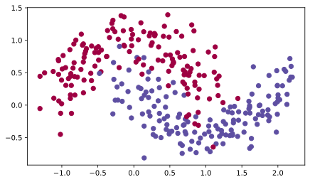
A 3-layer neural network has already been implemented in the model function below. You will train it with
- mini-batch gradient descent, which calls
update_parameters_with_gd(), - mini-batch momentum, which calls
initialize_velocity()andupdate_parameters_with_momentum(), - mini-batch Adam, which calls
initialize_adam()andupdate_parameters_with_adam().
The training loop is the pattern from the mini-batch gradient descent page. Each epoch reshuffles the data into new mini-batches (the seed increments so every epoch gets a different shuffle), loops over the mini-batches, runs forward propagation, accumulates the total cost, runs backward propagation, and updates the parameters with whichever optimizer was selected. The function also accepts two learning rate decay parameters, decay and decay_rate, which stay off for now and come into play in the learning rate decay section below.
def model(X, Y, layers_dims, optimizer, learning_rate=0.0007, mini_batch_size=64, beta=0.9,
beta1=0.9, beta2=0.999, epsilon=1e-8, num_epochs=5000, print_cost=True, decay=None, decay_rate=1):
"""
3-layer neural network model which can be run in different optimizer modes.
Arguments:
X -- input data, of shape (2, number of examples)
Y -- true "label" vector (1 for blue dot / 0 for red dot), of shape (1, number of examples)
layers_dims -- python list, containing the size of each layer
optimizer -- the optimizer to be used, "gd", "momentum" or "adam"
learning_rate -- the learning rate, scalar
mini_batch_size -- the size of a mini batch
beta -- momentum hyperparameter
beta1 -- exponential decay hyperparameter for the past gradients estimates
beta2 -- exponential decay hyperparameter for the past squared gradients estimates
epsilon -- hyperparameter preventing division by zero in Adam updates
num_epochs -- number of epochs
print_cost -- True to print the cost every 1000 epochs
decay -- function that updates the learning rate as training progresses (None keeps it fixed)
decay_rate -- decay rate passed to the decay function
Returns:
parameters -- python dictionary containing the updated parameters
"""
L = len(layers_dims) # number of layers in the neural network
costs = [] # to keep track of the cost
t = 0 # counter required for the Adam update
seed = 10 # so the "random" minibatches are reproducible
m = X.shape[1] # number of training examples
learning_rate0 = learning_rate # the original learning rate
# Initialize parameters
parameters = initialize_parameters(layers_dims)
# Initialize the optimizer
if optimizer == "gd":
pass # no initialization required for gradient descent
elif optimizer == "momentum":
v = initialize_velocity(parameters)
elif optimizer == "adam":
v, s = initialize_adam(parameters)
# Optimization loop
for i in range(num_epochs):
# Define the random minibatches. The seed increments to reshuffle differently each epoch
seed = seed + 1
minibatches = random_mini_batches(X, Y, mini_batch_size, seed)
cost_total = 0
for minibatch in minibatches:
# Select a minibatch
(minibatch_X, minibatch_Y) = minibatch
# Forward propagation
a3, caches = forward_propagation(minibatch_X, parameters)
# Compute cost and add to the cost total
cost_total += compute_cost(a3, minibatch_Y)
# Backward propagation
grads = backward_propagation(minibatch_X, minibatch_Y, caches)
# Update parameters
if optimizer == "gd":
parameters = update_parameters_with_gd(parameters, grads, learning_rate)
elif optimizer == "momentum":
parameters, v = update_parameters_with_momentum(parameters, grads, v, beta, learning_rate)
elif optimizer == "adam":
t = t + 1 # Adam counter
parameters, v, s, _, _ = update_parameters_with_adam(parameters, grads, v, s,
t, learning_rate, beta1, beta2, epsilon)
cost_avg = cost_total / m
if decay:
learning_rate = decay(learning_rate0, i, decay_rate)
# Print the cost every 1000 epochs
if print_cost and i % 1000 == 0:
print("Cost after epoch %i: %f" % (i, cost_avg))
if decay:
print("learning rate after epoch %i: %f" % (i, learning_rate))
if print_cost and i % 100 == 0:
costs.append(cost_avg)
# plot the cost
plt.plot(costs)
plt.ylabel('cost')
plt.xlabel('epochs (per 100)')
plt.title("Learning rate = " + str(learning_rate))
plt.show()
return parametersMini-Batch Gradient Descent
Run the following code to see how the model does with plain mini-batch gradient descent.
# train 3-layer model
layers_dims = [train_X.shape[0], 5, 2, 1]
parameters = model(train_X, train_Y, layers_dims, optimizer="gd")
# Predict
predictions = predict(train_X, train_Y, parameters)
# Plot decision boundary
plt.title("Model with Gradient Descent optimization")
axes = plt.gca()
axes.set_xlim([-1.5, 2.5])
axes.set_ylim([-1, 1.5])
plot_decision_boundary(lambda x: predict_dec(parameters, x.T), train_X, train_Y)Cost after epoch 0: 0.702405
Cost after epoch 1000: 0.668101
Cost after epoch 2000: 0.635288
Cost after epoch 3000: 0.600491
Cost after epoch 4000: 0.573367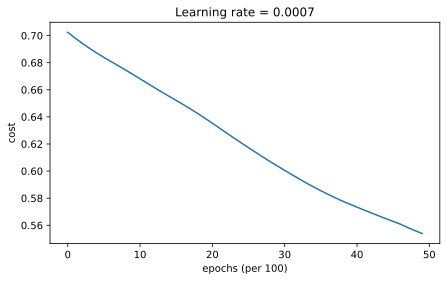
Accuracy: 0.7166666666666667Plain mini-batch gradient descent training cost and learned decision boundary.
Mini-Batch Gradient Descent with Momentum
Next, run the following code to see how the model does with momentum. Because this example is relatively simple, the gains from using momentum are small, but for more complex problems you might see bigger gains.
# train 3-layer model
layers_dims = [train_X.shape[0], 5, 2, 1]
parameters = model(train_X, train_Y, layers_dims, beta=0.9, optimizer="momentum")
# Predict
predictions = predict(train_X, train_Y, parameters)
# Plot decision boundary
plt.title("Model with Momentum optimization")
axes = plt.gca()
axes.set_xlim([-1.5, 2.5])
axes.set_ylim([-1, 1.5])
plot_decision_boundary(lambda x: predict_dec(parameters, x.T), train_X, train_Y)Cost after epoch 0: 0.702413
Cost after epoch 1000: 0.668167
Cost after epoch 2000: 0.635388
Cost after epoch 3000: 0.600591
Cost after epoch 4000: 0.573444Accuracy: 0.7166666666666667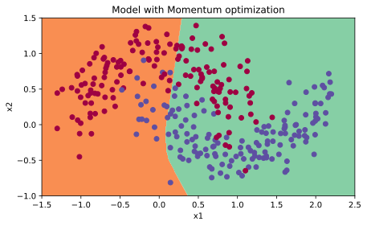
Model with Momentum optimization.
Mini-Batch Gradient Descent with Adam
Finally, run the following code to see how the model does with Adam.
# train 3-layer model
layers_dims = [train_X.shape[0], 5, 2, 1]
parameters = model(train_X, train_Y, layers_dims, optimizer="adam")
# Predict
predictions = predict(train_X, train_Y, parameters)
# Plot decision boundary
plt.title("Model with Adam optimization")
axes = plt.gca()
axes.set_xlim([-1.5, 2.5])
axes.set_ylim([-1, 1.5])
plot_decision_boundary(lambda x: predict_dec(parameters, x.T), train_X, train_Y)Cost after epoch 0: 0.702166
Cost after epoch 1000: 0.167845
Cost after epoch 2000: 0.141316
Cost after epoch 3000: 0.138788
Cost after epoch 4000: 0.136066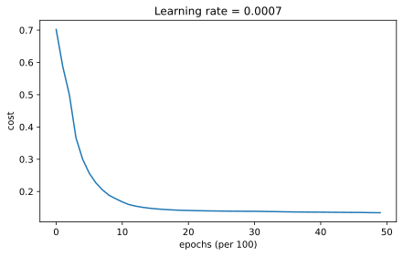
Accuracy: 0.9433333333333334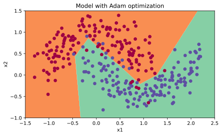
Adam training cost and learned decision boundary.
Summary
| optimization method | accuracy | cost shape |
|---|---|---|
| Gradient descent | >71% | smooth |
| Momentum | >71% | smooth |
| Adam | >94% | smoother |
Momentum usually helps, but given the small learning rate and the simplistic dataset, its impact is almost negligible. On the other hand, Adam clearly outperforms mini-batch gradient descent and momentum. If you run the model for more epochs on this simple dataset, all three methods will lead to very good results. However, you have seen that Adam converges a lot faster.
Some advantages of Adam include relatively low memory requirements (though higher than gradient descent and gradient descent with momentum), and that it usually works well even with little tuning of the hyperparameters (except \(\alpha\)). The algorithm was introduced in the Adam paper.
Learning Rate Decay and Scheduling
Lastly, the learning rate is another hyperparameter that can help you speed up learning. During the first part of training, your model can get away with taking large steps, but over time, using a fixed value for the learning rate \(\alpha\) can cause your model to get stuck in a wide oscillation that never quite converges. If you were to slowly reduce the learning rate over time, you could then take smaller, slower steps that bring you closer to the minimum. This is the idea behind learning rate decay.
Learning rate decay can be achieved by using either adaptive methods or pre-defined learning rate schedules. In this section, you will apply scheduled learning rate decay to the 3-layer neural network in the three different optimizer modes and see how each one differs, as well as the effect of scheduling at different epochs. The model function defined above already supports this through its decay and decay_rate parameters. When a decay function is passed in, the model recomputes the learning rate from the original \(\alpha_0\) at the end of every epoch.
Decay on Every Iteration
For this portion, you will use the decay formula from the notes,
\[ \alpha = \frac{1}{1 + \text{decayRate} \times \text{epochNumber}}\, \alpha_0 \]
which updates the learning rate on every epoch. The implementation is a single line.
def update_lr(learning_rate0, epoch_num, decay_rate):
"""
Calculates the updated learning rate using exponential weight decay.
Arguments:
learning_rate0 -- original learning rate, scalar
epoch_num -- epoch number, integer
decay_rate -- decay rate, scalar
Returns:
learning_rate -- updated learning rate, scalar
"""
learning_rate = 1 / (1 + decay_rate * epoch_num) * learning_rate0
return learning_ratelearning_rate = 0.5
print("Original learning rate: ", learning_rate)
epoch_num = 2
decay_rate = 1
learning_rate_2 = update_lr(learning_rate, epoch_num, decay_rate)
print("Updated learning rate: ", learning_rate_2)Original learning rate: 0.5
Updated learning rate: 0.16666666666666666Now train the model with gradient descent, a starting learning rate of 0.1, and this per-epoch decay.
# train 3-layer model
layers_dims = [train_X.shape[0], 5, 2, 1]
parameters = model(train_X, train_Y, layers_dims, optimizer="gd", learning_rate=0.1, num_epochs=5000, decay=update_lr)
# Predict
predictions = predict(train_X, train_Y, parameters)
# Plot decision boundary
plt.title("Model with Gradient Descent optimization")
axes = plt.gca()
axes.set_xlim([-1.5, 2.5])
axes.set_ylim([-1, 1.5])
plot_decision_boundary(lambda x: predict_dec(parameters, x.T), train_X, train_Y)Cost after epoch 0: 0.701091
learning rate after epoch 0: 0.100000
Cost after epoch 1000: 0.661884
learning rate after epoch 1000: 0.000100
Cost after epoch 2000: 0.658620
learning rate after epoch 2000: 0.000050
Cost after epoch 3000: 0.656765
learning rate after epoch 3000: 0.000033
Cost after epoch 4000: 0.655486
learning rate after epoch 4000: 0.000025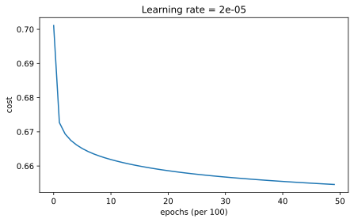
Accuracy: 0.6533333333333333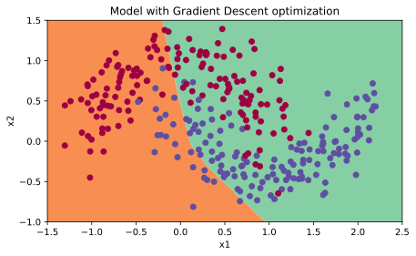
Per-epoch learning-rate decay reduces the learning rate too quickly during gradient descent.
Notice in the printed output that when the decay occurs on every epoch, the learning rate goes to zero too quickly, even though the run started with a higher learning rate of 0.1. By epoch 1000 the learning rate is already \(\frac{0.1}{1001} \approx 0.0001\), and by epoch 5000 it is down to about 0.00002, so the cost barely moves after the first few hundred epochs. When you are training for a few epochs this does not cause a lot of trouble, but when the number of epochs is large, the optimization algorithm effectively stops updating. One common fix to this issue is to decay the learning rate every few steps instead. This is called fixed interval scheduling.
Fixed Interval Scheduling
You can help prevent the learning rate from speeding to zero too quickly by scheduling the exponential learning rate decay at a fixed time interval, for example every 1000 epochs. The learning rate then stays constant within each window and drops when the next window begins.
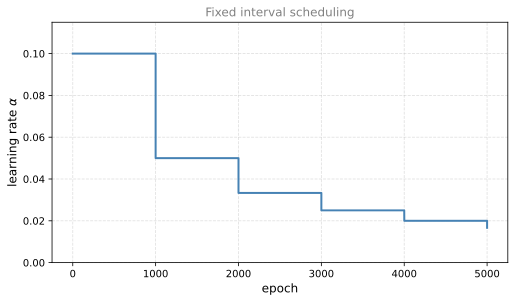
The staircase above shows the schedule with \(\alpha_0 = 0.1\), a decay rate of 1, and a window of 1000 epochs. The learning rate holds constant within each window instead of shrinking on every epoch.
Implement the scheduling such that the learning rate only changes when epoch_num is a multiple of time_interval. The fraction in the denominator uses the floor operation,
\[ \alpha = \frac{1}{1 + \text{decayRate} \times \left\lfloor \frac{\text{epochNum}}{\text{timeInterval}} \right\rfloor}\, \alpha_0 \]
def schedule_lr_decay(learning_rate0, epoch_num, decay_rate, time_interval=1000):
"""
Calculates the updated learning rate using exponential weight decay with fixed interval scheduling.
Arguments:
learning_rate0 -- original learning rate, scalar
epoch_num -- epoch number, integer
decay_rate -- decay rate, scalar
time_interval -- number of epochs where the learning rate stays constant
Returns:
learning_rate -- updated learning rate, scalar
"""
learning_rate = 1 / (1 + decay_rate * np.floor(epoch_num / time_interval)) * learning_rate0
return learning_rateWith a window of 100 epochs, the learning rate is untouched at epoch 10 and takes its first drop at epoch 100.
learning_rate = 0.5
print("Original learning rate: ", learning_rate)
epoch_num_1 = 10
epoch_num_2 = 100
decay_rate = 0.3
time_interval = 100
learning_rate_1 = schedule_lr_decay(learning_rate, epoch_num_1, decay_rate, time_interval)
learning_rate_2 = schedule_lr_decay(learning_rate, epoch_num_2, decay_rate, time_interval)
print("Updated learning rate after {} epochs: ".format(epoch_num_1), learning_rate_1)
print("Updated learning rate after {} epochs: ".format(epoch_num_2), learning_rate_2)Original learning rate: 0.5
Updated learning rate after 10 epochs: 0.5
Updated learning rate after 100 epochs: 0.3846153846153846Learning Rate Decay with Each Optimization Method
Now train the 3-layer network once more with each of the three optimizers, this time with the scheduled decay (a window of 1000 epochs) on top. Gradient descent and momentum use the higher starting learning rate of 0.1 that the decay now makes safe, while Adam starts at 0.01.
# train 3-layer model
layers_dims = [train_X.shape[0], 5, 2, 1]
parameters = model(train_X, train_Y, layers_dims, optimizer="gd", learning_rate=0.1, num_epochs=5000, decay=schedule_lr_decay)
# Predict
predictions = predict(train_X, train_Y, parameters)
# Plot decision boundary
plt.title("Model with Gradient Descent optimization")
axes = plt.gca()
axes.set_xlim([-1.5, 2.5])
axes.set_ylim([-1, 1.5])
plot_decision_boundary(lambda x: predict_dec(parameters, x.T), train_X, train_Y)Cost after epoch 0: 0.701091
learning rate after epoch 0: 0.100000
Cost after epoch 1000: 0.127161
learning rate after epoch 1000: 0.050000
Cost after epoch 2000: 0.120304
learning rate after epoch 2000: 0.033333
Cost after epoch 3000: 0.117033
learning rate after epoch 3000: 0.025000
Cost after epoch 4000: 0.117512
learning rate after epoch 4000: 0.020000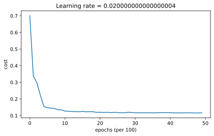
Accuracy: 0.9433333333333334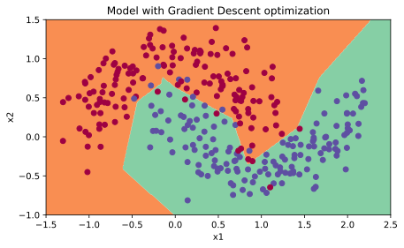
Fixed-interval learning-rate decay preserves useful gradient descent updates for longer.
# train 3-layer model
layers_dims = [train_X.shape[0], 5, 2, 1]
parameters = model(train_X, train_Y, layers_dims, optimizer="momentum", learning_rate=0.1, num_epochs=5000, decay=schedule_lr_decay)
# Predict
predictions = predict(train_X, train_Y, parameters)
# Plot decision boundary
plt.title("Model with Gradient Descent with momentum optimization")
axes = plt.gca()
axes.set_xlim([-1.5, 2.5])
axes.set_ylim([-1, 1.5])
plot_decision_boundary(lambda x: predict_dec(parameters, x.T), train_X, train_Y)Cost after epoch 0: 0.702226
learning rate after epoch 0: 0.100000
Cost after epoch 1000: 0.128974
learning rate after epoch 1000: 0.050000
Cost after epoch 2000: 0.125965
learning rate after epoch 2000: 0.033333
Cost after epoch 3000: 0.123375
learning rate after epoch 3000: 0.025000
Cost after epoch 4000: 0.123218
learning rate after epoch 4000: 0.020000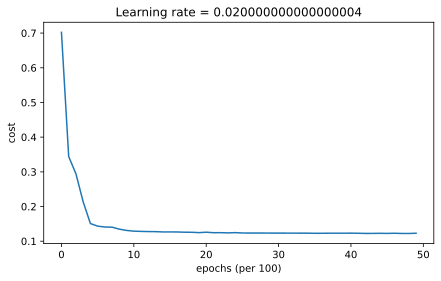
Accuracy: 0.9533333333333334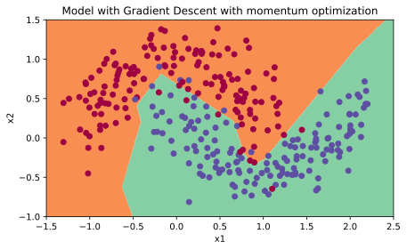
Model with Gradient Descent with momentum optimization.
# train 3-layer model
layers_dims = [train_X.shape[0], 5, 2, 1]
parameters = model(train_X, train_Y, layers_dims, optimizer="adam", learning_rate=0.01, num_epochs=5000, decay=schedule_lr_decay)
# Predict
predictions = predict(train_X, train_Y, parameters)
# Plot decision boundary
plt.title("Model with Adam optimization")
axes = plt.gca()
axes.set_xlim([-1.5, 2.5])
axes.set_ylim([-1, 1.5])
plot_decision_boundary(lambda x: predict_dec(parameters, x.T), train_X, train_Y)Cost after epoch 0: 0.699346
learning rate after epoch 0: 0.010000
Cost after epoch 1000: 0.130074
learning rate after epoch 1000: 0.005000
Cost after epoch 2000: 0.129826
learning rate after epoch 2000: 0.003333
Cost after epoch 3000: 0.129282
learning rate after epoch 3000: 0.002500
Cost after epoch 4000: 0.128361
learning rate after epoch 4000: 0.002000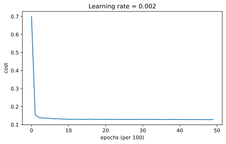
Accuracy: 0.94Adam training with fixed-interval learning-rate decay.
Achieving Similar Performance with Different Methods
With mini-batch gradient descent or mini-batch gradient descent with momentum, the accuracy was significantly lower than Adam. When learning rate decay is added on top, either one can achieve performance at a speed and accuracy score similar to Adam.
| optimization method | accuracy |
|---|---|
| Gradient descent | >94% |
| Momentum | >95% |
| Adam | 94% |
In the case of Adam, notice that the learning curve achieves a similar accuracy but faster.
ImportantWhat to Remember from This Lab
- Shuffling and partitioning build the mini-batches that let the optimizer update after each subset of examples.
- Momentum smooths the oscillations of mini-batch gradient descent by stepping in the direction of an exponentially weighted average of the gradients.
- Adam combines momentum with RMSprop and, with bias correction, usually converges much faster with little hyperparameter tuning beyond \(\alpha\).
- Learning rate decay scheduling speeds up training, and fixed interval scheduling avoids shrinking the learning rate to zero too quickly.